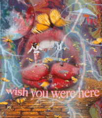

DMA
 🦋 The Butterfly Effect 🦋
Adobe Photoshop + Picture Collage
8.27 × 11.69 / 15x18
The song “BUTTERFLY EFFECT†by Travis Scott is the inspiration behind this piece. It has been one of my favorite songs since the song debuted in 2017. Simply the idea behind, “BUTTERFLY EFFECT†is the theory in which, small causes can have large effects. Simply meaning that one small action could either make or break anything. I applied this to my own life and my own decisions as I’m constantly learning and maturing every day becoming more independent and learning what life has to offer as a young adult.The “wish you were here†text is in reference to Travis Scott’s “ASTROWORLD TOUR”, as he plastered it over tour merchandise pieces on sweaters and t-shirts.
In reference to this piece, the visible couple and child in the centerpoint was placed there to express youth and innocence. In my own life, I’ve had my own faults at dealing with the definition of family, as I was the only child for 5 years until my younger brother was born. As I’ve grown into a young adult, I’ve always felt somewhat of a “there-but-not-really-there”/ ”empty†presence from one of my parents. Due to this, I’ve created a connection behind the slogan “wish you were here†to express the emptiness of that individual’s influence in my life. I created this piece in Fall 2019, and sadly I do still feel the same was, as I feel like I’m constantly drifting away slowly from that parent. Again, referencing the idea of the “Butterfly Effect”, one small action (absence) could lead to a bigger action (isolation).